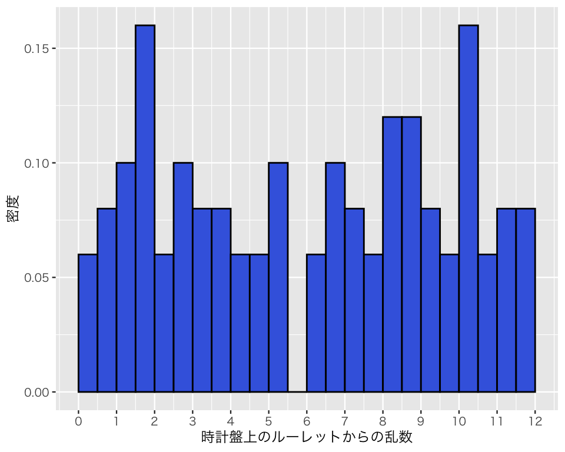
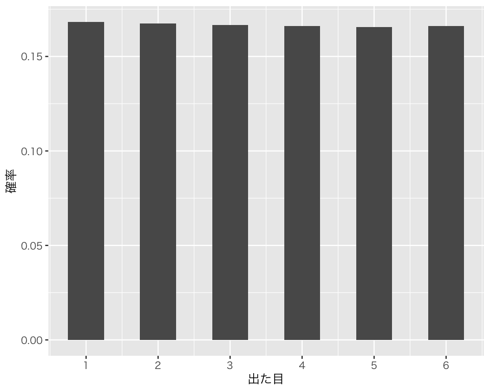
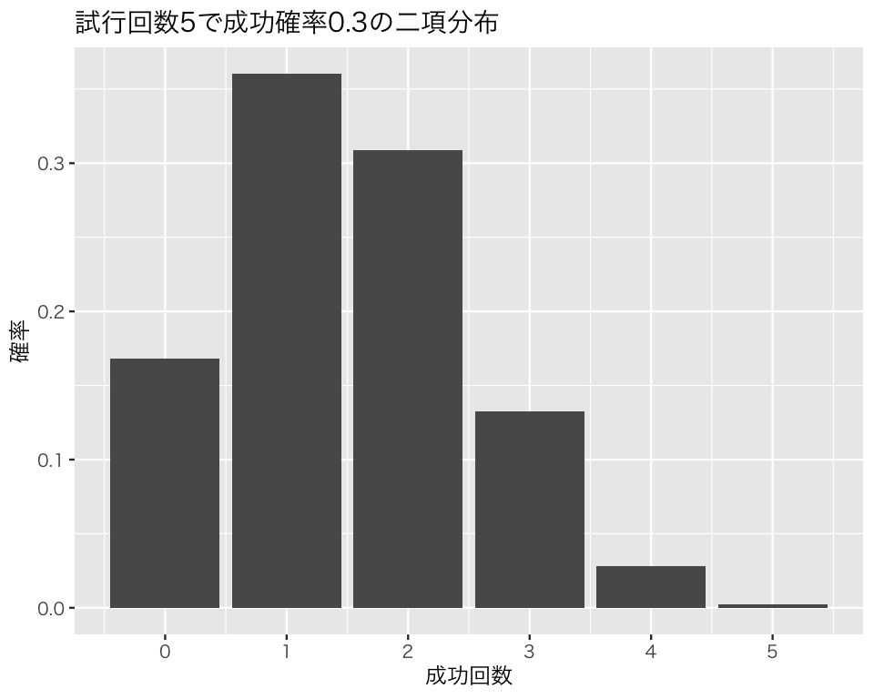
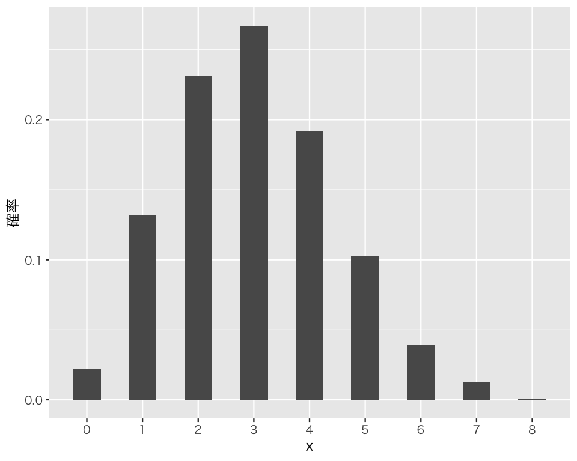
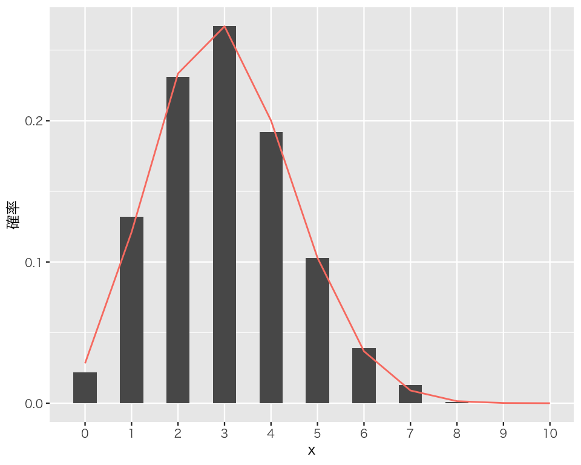
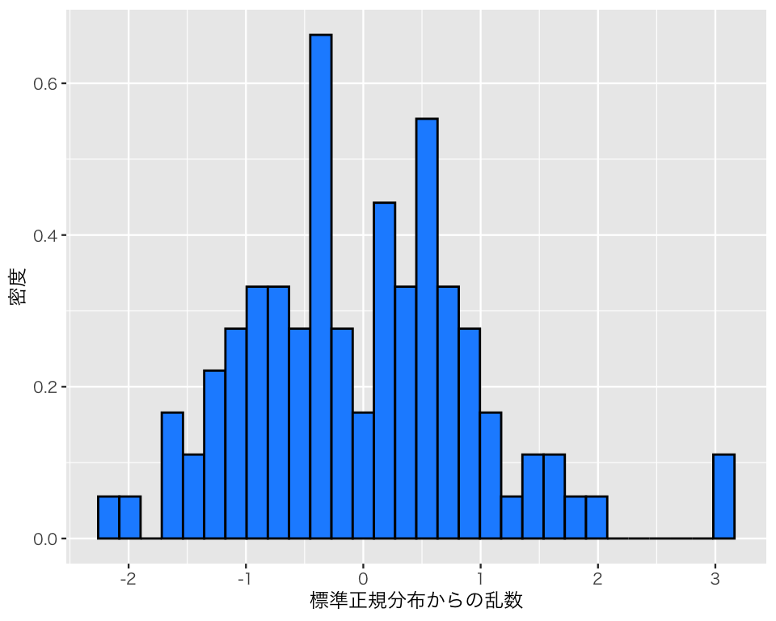
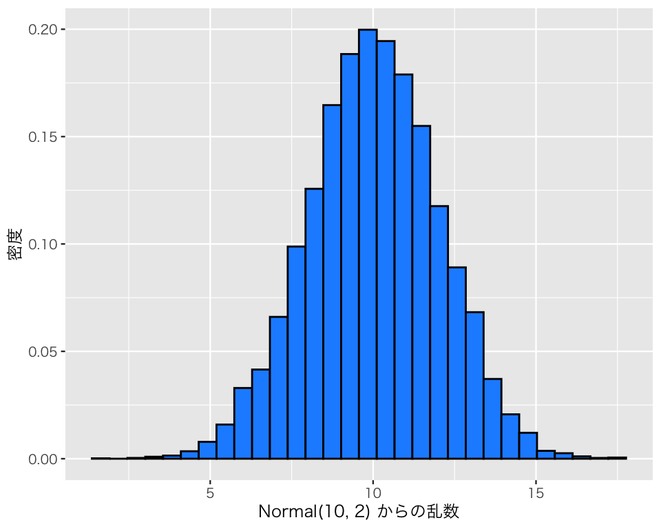
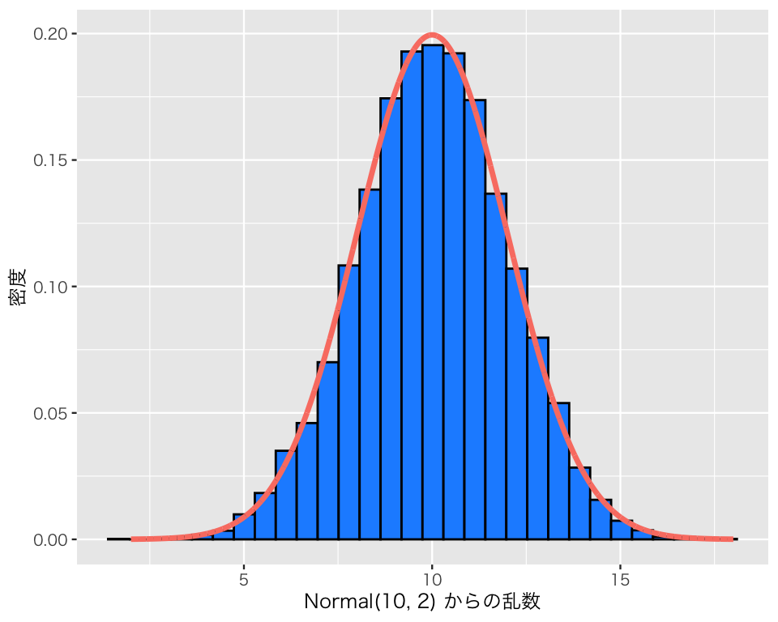

9 確率変数と確率分布
今回の目標
- 確率分布から乱数を生成し、確率変数と確率分布の関係を理解しよう
- Rで代表的確率分布を扱えるようになろう
- 密度関数：
dXXX() - 分布関数：
pXXX() - 逆分布関数：
qXXX() - 乱数生成：
rXXX()
- 密度関数：
まず、tidyverseパッケージを忘れずに読み込もう。
Windows ユーザ（大学PCを含む）は、
library(fontregisterer)
theme_set(theme_gray(base_size = 9,
base_family = "Yu Gothic"))を実行する。
Linux ユーザ（IPAexフォント が利用可能である場合）は、
theme_set(theme_gray(base_size = 9,
base_family = "IPAexGothic"))を実行する。
macOS ユーザは、
theme_set(theme_gray(base_size = 9,
base_family = "HiraginoSans-W3"))を実行する。
9.1 Rで確率分布を使う
Rには、代表的な確率分布を利用するための関数が用意されている。 いくつかの代表的な確率分布について、以下の4つの関数がセットで存在する（XXXの分布は確率分布によって変わる）。
-
dXXX()：確率分布XXXに従う確率変数が特定の値をとるときの密度 (density) を求める。つまり、密度関数\(f_X\)。 -
pXXX()：確率分布XXXに従う確率変数が特定の値以下になる確率 (probability) を求める。つまり、分布関数 \(F_X\)。 -
qXXX()：確率分布XXXにおいて、分布関数の値がある確率以上になる最小の値を求める。つまり、逆分布関数\(F_X^{-1}\)。 -
rXXX(): 確率分布XXXから乱数 (random number) を生成する。
以下では、いくつかの確率分布について、Rで扱う方法を乱数生成を中心に説明する。
9.1.1 一様分布
確率変数\(X\)が最小値\(a\)、最大値\(b\)の連続型一様分布に従うとき、 \[ X \sim \mbox{Uniform}(a, b) \] と、書く。
一様分布 (uniform distribution) からの乱数生成には、runif() を使う。この関数では、以下の3つの引数（ひきすう）を指定する。
-
n: 生成する乱数の個数（必ず指定する） -
min: 最小値（指定しないと 0 に設定される） -
max: 最大値（指定しないと 1 に設定される）
時計のように1から12（12は0とも考えらえる）の数字が書いてあるような円盤の上でランダムにルーレットを回すことを考える。そうすると、0から12の間のどの位置にルーレットが止まる確率も等しいと考えられる。このような状況を、最小値が0で最大値が12の（連続な）一様分布（連続一様分布; continuous uniform distribution）で表すことができる。つまり、 \[
X \sim \mbox{Uniform}(0, 12)
\] である。この確率変数\(X\)の値を100個得るために、このルーレットを100回使ってみよう。 言い換えると、\(\mbox{Uniform}(0, 12)\)から100個の乱数を生成しよう。 得られた結果はa1に保存する。
a1 <- runif(n = 100, min = 0, max = 12)この結果をヒストグラムにしてみよう。
df1 <- tibble(a1) # 結果をデータフレーム (tibble) に入れる
h1 <- ggplot(df1, aes(x = a1, y = after_stat(density))) +
geom_histogram(binwidth = 0.5,
boundary = 0,
fill = "royalblue",
color = "black") +
labs(x = "時計盤上のルーレットからの乱数",
y = "密度") +
scale_x_continuous(breaks = 0 : 12) # x軸の目盛を調整
plot(h1)
生成する乱数の個数を増やしてみよう。
a2 <- runif(n = 10000, min = 0, max = 12)
df2 <- tibble(a2)
h2 <- ggplot(df2, aes(x = a2, y = after_stat(density))) +
geom_histogram(binwidth = 0.5,
boundary = 0,
fill = "royalblue",
color = "black") +
labs(x = "時計盤上のルーレットからの乱数",
y = "密度") +
scale_x_continuous(breaks = 0 : 12) # x軸の目盛を調整
plot(h2)理論的に想定される密度曲線を、上の図に重ねて描いてみよう。 まずは、0から12の範囲で複数の（できるだけ多くの）点をとる。
x_pt <- seq(from = 0, to = 12, length.out = 10000)\(x\) の各点に対応する密度 \(f_X(x)\) を求める。
dens <- dunif(x_pt, min = 0, max = 12)x (\(x\)) と dens (\(f_X(x)\)) をデータフレーム (tibble) にまとめる。
D_unif <- tibble(x = x_pt, dens = dens)このデータを使い、密度曲線を上で作ったヒストグラムに重ねる。
\(X\)がある実数\(x\)以下の値をとる確率は、分布関数\(F_X(x)\)で求めることができるが、Rでは次のようにする。 \(X \leq 3\)となる確率：
punif(3, min = 0, max = 12) [1] 0.25\(X\)が4.8以上、11.5以下になる確率：
逆分布関数を使うと、分布関数の値が\(u\)以上になる最小の\(x\)の値を求めることができる。 たとえば、分布関数の値が0.5以上になるのは、
qunif(0.5, min = 0, max = 12)[1] 6である。同様に、1以上になるのは、
qunif(1, min = 0, max = 12)[1] 12である（当たり前だが）。
連続ではない一様分布（離散一様分布; discrete uniform distribution）からの乱数は、前のトピックで使った sample() で生成することができる。「正しい」サイコロ投げは、「1から6までの整数の（非連続な）一様分布」である。
a3 <- sample(1 : 6, size = 100000, replace = TRUE)
df3 <- tibble(a3)
p3 <- ggplot(df3, aes(x = a3, y = after_stat(count) / nrow(df3))) +
geom_bar(width = 0.5) +
labs(x = "出た目", y = "確率") +
scale_x_continuous(breaks = 1 : 6)
plot(p3)
このグラフはヒストグラムではなく棒グラフであり、縦軸は密度ではなく確率である。 離散型の場合には確率関数（確率質量関数）によって確率変数が特定の値をとる確率を考えることができるので、縦軸に確率をとったグラフを描くことができる。
9.1.2 二項分布
コイン投げの結果は、表か裏の2パタン（通常、「成功」と「失敗」と呼ばれる。コイン投げでは、表と裏のどちらを成功と呼んでもよいが、ここでは表を成功、裏を失敗としておく）しかない。また、同じコインを何度か投げることを繰り返すとき、1回ごとのコイン投げで表が出る確率は一定であると考えられる。
このように、結果が成功と失敗の2種類のみで、成功確率が \(\theta\) （シータ, theta）で一定（したがって、失敗確率は “\(1-\theta\)” で一定）であるような試行を \(N\) 回繰り返したとき、その成功回数の分布を、「試行回数 \(N\) で成功確率 \(\theta\) の二項分布 (binomial distribution)」と呼ぶ。確率変数\(X\)が試行回数\(N\)、成功確率\(\theta\)の二項分布に従うとき、 \[ X \sim \mbox{Binomial}(N, \theta) \] と書く。
理論的には、二項分布の平均値（期待値）は \(N \theta\)、分散は \(N \theta (1 - \theta)\) になる。したがって、標準偏差は \(\sqrt{N \theta (1 - \theta)}\) になる。また、最小値は0（1ではないので注意）、最大値は \(N\) である。
たとえば、「試行回数5で成功確率0.3の二項分布」の平均値は\(5 \cdot 0.3 = 1.5\)、分散は \(5 \cdot 0.3 (1 - 0.3) = 1.05\)、標準偏差は \(\sqrt{1.05} \approx 1.02\) である（「\(\approx\)」は「ほぼ等しい」という意味）。最小値は0、最大値は5である。 この分布は、次の図のような形をしている。

sample() を使わずに、Rでコイン投げを実行してみよう。Rで二項分布に従う乱数を生成する関数は、rbinom() である。この関数で指定しなければならない引数（ひきすう）は以下の3つである。
-
n：実験の回数 -
size: 試行回数（0以上の（非負の）整数） -
prob: 成功確率（コイン投げで表が出る確率。0以上1以下）
たとえば、rbinom(n = 8, size = 10, prob = 0.4) とすると、「表が出る確率が0.4のコインを10回投げる」という実験を8回実行する。
rbinom(n = 8, size = 10, prob = 0.4)[1] 3 4 7 4 3 2 3 7結果として、8つの数字が表示されるが、それぞれの数字が、1回ごとの実験（コインを10回投げる）で表が何回出たかを表している。
この数は乱数 (random numbers)、つまり、Rによってランダムに生み出された数字なので、人によって異なる数字が得られるはずで、このWebページと同じ数字が出るとは限らない。
試しにまったく同じ関数をもう一度実行すると、違う数が得られる。
rbinom(n = 8, size = 10, prob = 0.4)[1] 6 5 4 6 6 2 6 5表が出る確率が0.5のコインを使って、1回のコイン投げ実験を1回だけ実行するには、
rbinom(n = 1, size = 1, prob = 0.5)[1] 0とする。0と出れば表が0回出た（つまり、裏が出た）ということであり、1ならば表が出たということである。何度か試してみよう。
rbinom(n = 1, size = 1, prob = 0.5)[1] 1rbinom(n = 1, size = 1, prob = 0.5)[1] 1rbinom(n = 1, size = 1, prob = 0.5)[1] 0rbinom(n = 1, size = 1, prob = 0.5)[1] 0rbinom(n = 1, size = 1, prob = 0.5)[1] 0表が出る確率が0.5のコインを使って、1回のコイン投げ実験を10回まとめて実行するには、次のようにする。
rbinom(n = 10, size = 1, prob = 0.5) [1] 1 0 0 1 1 1 1 0 1 0確率変数 \(X\) が、\(X \sim \mbox{Binomial}(10, 0.3)\) のとき、確率変数\(X\)をランダムに1,000個生成してみよう。
x <- rbinom(n = 1000, size = 10, prob = 0.3)この結果を棒グラフにしてみよう（離散型分布なので、縦軸に確率をとって棒グラフが描ける）。
D_bin <- tibble(x)
h_binom <- ggplot(D_bin, aes(x = x, y = after_stat(count) / nrow(D_bin))) +
geom_bar(width = 0.5) +
scale_x_continuous(breaks = 0 : 10,
minor_breaks = NULL) +
labs(y = "確率")
plot(h_binom)
理論的に想定される密度曲線を、上の図に重ねて描いてみよう。
二項分布は離散型の分布なので、実際には飛び飛びの値（整数値）しか取らない。 したがって、「密度」が\(x\)軸方向に繋がっていないので、本来は曲線を描くことはできない。 また、縦軸も「密度」ではなく「確率」である。
まずは、できるだけ多くの、ただし実際に取りうる値の点をとる。 \(X \sim \mbox{Binomial}(10, 0.3)\)の\(X\)が取りうる値は0から10までの整数である。
x_pt <- 0 : 10\(x\) の各点に対応する密度 \(f_X(x)\) を計算する（本当は密度ではなく確率だが）。
dens <- dbinom(x_pt, size = 10, prob = 0.3)x (\(x\)) と dens (\(f_X(x)\)) をデータフレーム (tibble) にまとめる。
D_binom <- tibble(x = x_pt, dens = dens)このデータを使い、密度曲線を上で作ったヒストグラムに重ねる。
h_binom_b <- h_binom +
geom_line(data = D_binom,
aes(x = x, y = dens),
color = "salmon")
plot(h_binom_b)
\(X\)がある実数\(x\)以下の値をとる確率は、分布関数\(F_X(x)\)で求めることができるが、Rでは次のようにする。 3以下の確率：
pbinom(3, size = 10, prob = 0.3)[1] 0.64961074以上、6以下の確率
逆分布関数を使うと、分布関数の値が\(u\)以上になる最小の\(x\)の値を求めることができる。 たとえば、分布関数の値が0.5以上になるのは、
qbinom(0.5, size = 10, prob = 0.3)[1] 3である。同様に、0.999以上になるのは、
qbinom(.999, size = 10, prob = 0.3)[1] 8である。
9.1.3 正規分布
前のトピックでも説明したが、確率変数\(X\)が平均\(\mu\)、標準偏差\(\sigma\)の正規分布に従うとき、 \[ X \sim \mbox{Normal}(\mu, \sigma) \] と書く。
正規分布 (normal distribution) からの乱数生成には、rnorm() を使う。この関数では、以下の3つの引数（ひきすう）を指定する。
-
n: 生成する乱数の個数（必ず指定する） -
mean: 正規分布の平均値（指定しないと 0 に設定される） -
sd: 正規分布の標準偏差（指定しないと 1 に設定される）
平均と標準偏差を指定しないと、平均が0で標準偏差が1の正規分布、すなわち標準正規分布からの乱数生成が行われる。
標準正規分布から100個の乱数を生成してみよう。
b1 <- rnorm(n = 100)作った乱数をヒストグラムにしてみよう。
df_n1 <- tibble(b1)
h_n1 <- ggplot(df_n1, aes(x = b1, y = after_stat(density))) +
geom_histogram(color = "black", fill = "dodgerblue") +
labs(x = "標準正規分布からの乱数", y = "密度")
plot(h_n1)
正規分布に見えるだろうか？ 乱数の平均値と標準偏差を計算してみよう。
乱数の元となった確率分布の平均値、標準偏差と比べると、どんなことが言えるだろうか？
乱数の数を増やして同じことをしてみよう。
b2 <- rnorm(n = 10000)
df_n2 <- tibble(b2)
h_n2 <- ggplot(df_n2, aes(x = b2, y = after_stat(density))) +
geom_histogram(color = "black", fill = "dodgerblue") +
labs(x = "標準正規分布からの乱数", y = "密度")
plot(h_n2)今度はどうだろうか？
乱数の平均値と標準偏差を計算してみよう。
乱数の元となった確率分布の平均値、標準偏差と比べると、どんなことが言えるだろうか？
平均値と標準偏差を変えて、同じことをしてみよう。 \(X \sim \mbox{Normal}(10, 2)\)だとする。
b3 <- rnorm(n = 10000, mean = 10, sd = 2)
df_n3 <- tibble(b3)
h_n3 <- ggplot(df_n3, aes(x = b3, y = after_stat(density))) +
geom_histogram(color = "black", fill = "dodgerblue") +
labs(x = "Normal(10, 2) からの乱数", y = "密度")
plot(h_n3)
平均値の位置に縦線を加えてみよう。
h_n3_b <- h_n3 +
geom_vline(xintercept = mean(b3),
color = "violet")
plot(h_n3_b)`stat_bin()` using `bins = 30`. Pick better value with `binwidth`.乱数の平均値と標準偏差を計算してみよう。
乱数の元となった確率分布の平均値、標準偏差と比べると、どんなことが言えるだろうか？
理論的に想定される密度曲線を、上の図に重ねて描いてみよう。 まずは、\(X\)が取りうる値の範囲でできるだけ多くの点をとる。 上の図の描画範囲が2.5から17．5までなので、それより少し広い幅で点をとろう。
x_pt <- seq(from = 2, to = 18, length.out = 10000)\(x\) の各点に対応する密度 \(f_X(x)\) を計算する。
dens <- dnorm(x_pt, mean = 10, sd = 2)x (\(x\)) と dens (\(f_X(x)\)) をデータフレーム (tibble) にまとめる。
D_nml <- tibble(x = x_pt, dens = dens)このデータを使い、密度曲線を上で作ったヒストグラムに重ねる。
h_n3_b <- h_n3 +
geom_line(data = D_nml,
aes(x = x, y = dens),
color = "salmon",
linewidth = 1.2)
plot(h_n3_b)`stat_bin()` using `bins = 30`. Pick better value with `binwidth`.
\(X\)がある実数\(x\)以下の値をとる確率は、分布関数\(F_X(x)\)で求めることができるが、Rでは次のようにする。 3以下の確率：
pnorm(3, mean = 10, sd = 2)[1] 0.000232629112以下の確率：
pnorm(12, mean = 10, sd = 2)[1] 0.84134477.7以上、11.5以下の確率
逆分布関数を使うと、分布関数の値が\(u\)以上になる最小の\(x\)の値を求めることができる。 たとえば、分布関数の値が0.5以上になるのは、
qnorm(0.5, mean = 10, sd = 2)[1] 10である。同様に、1以上になるのは、
qnorm(1, mean = 10, sd = 2)[1] Infすなわち \(\infty\) である。言い換えると、実数の範囲で\(F(x)\)が1になることは決してない。
同様に、0以上になるのは
qnorm(0, mean = 10, sd = 2)[1] -Infすなわち \(-\infty\) である。
これらの結果から、正規分布に従う確率変数 \(X\) が取りうる値は \(-\infty < x < \infty\)、つまり実数全体であることがわかる（Rの出力が「正しい」ことを前提としている。この結果は実際に正しい）。
9.2 実習課題
9.2.1 二項分布
- 3つの引数の値を変えて、2つ以上の異なる条件で二項分布からの乱数を生成しなさい。
- 生成した乱数をヒストグラム（または棒グラフ）で表示しなさい。その際、生成された値の平均値の位置に縦線を描きなさい。
- 上で二項分布からランダムに生成したそれぞれの確率変数\(X\)について、以下の値を求めなさい。\(x_1\)、\(x_2\)、\(x_3\)の値は各自の使った確率分布に応じて、確率変数が取りうる値の範囲内で自由に決めてよい。ただし、\(x_2 < x_3\) とする。
- 確率変数の値が \(x_1\)以下になる確率。
- 確率変数の値が \(x_2\)以上、\(x_3\)以下になる確率。
- 分布関数 \(F_X(x) \geq 0.5\) になる最小の\(x\)。
- 分布関数 \(F_X(x) \geq 0.9\) になる最小の\(x\)。
9.2.2 正規分布
- 平均が\(\mu\), 標準偏差が\(\sigma\)の正規分布から乱数を1,000個生成しなさい。\(\mu\)と\(\sigma\)は自由に決めて良い。ただし、標準正規分布を使ってはいけない。
- 上で生成した乱数をヒストグラムで表示しなさい。その際、生成された値の平均値の位置に縦線を描きなさい。
- 上でランダムに生成した確率変数\(X\)について、以下の値を求めなさい。\(x_1\)、\(x_2\)、\(x_3\)の値は各自の使った確率分布に応じて、確率変数が取りうる値の範囲内で自由に決めてよい。ただし、\(x_2 < x_3\) とする。
- 確率変数の値が \(x_1\)以下になる確率。
- 確率変数の値が \(x_2\)以上、\(x_3\)以下になる確率。
- 分布関数 \(F_X(x) \geq 0.5\) になる最小の\(x\)。
- 分布関数 \(F_X(x) \geq 0.9\) になる最小の\(x\)。
9.2.3 標準正規分布
- 標準正規分布から乱数を1,000個生成しなさい。
- 上で生成した乱数をヒストグラムで表示しなさい。その際、生成された値の平均値の位置に縦線を描きなさい。
- 上でランダムに生成した確率変数\(X\)について、以下の値を求めなさい。
- 確率変数の値が \(-1.96\)以下になる確率。
- 確率変数の値が \(-1.96\)以上、\(1.96\)以下になる確率。
- 確率変数の値が \(1.96\)以上になる確率。
- 分布関数 \(F_X(x) \geq 0.5\) になる最小の\(x\)。
- 分布関数 \(F_X(x) \geq 0.025\) になる最小の\(x\)。
- 分布関数 \(F_X(x) \geq 0.975\) になる最小の\(x\)。